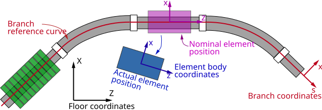
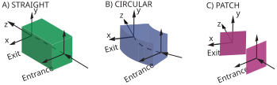
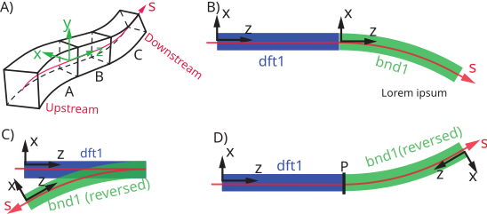
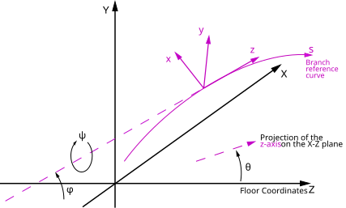
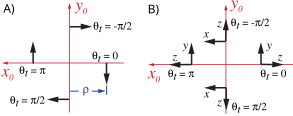

Coordinates¶
Phase Space Coordinate System¶
In construction…
Nomenclature¶
A bend element is any element that has a non-zero reference bend strength g_ref.
A patch element is any element that has a non-zero PatchParams parameters.
No element is not allowed to be both a bend and a patch element at the same time.
Coordinate Systems Used to Describe a Machine¶
{kind=link}

Fig. 1 The coordinate systems to describe a machine: The “floor” Cartesian coordinate system is independent of the accelerator. The “branch” curvilinear coordinate system follows the bends of the accelerator. The “branch reference curve” is the \(x = y = 0\) curve of the curvilinear coordinate system. Each lattice element has “element body” coordinates which, if the element has no alignment shifts (not “misaligned”), is the same as the branch coordinates.¶
SciBmad uses three coordinate systems to describe a machine as illustrated in the figure above.
First, the floor coordinates are Cartesian coordinate system independent of the accelerator.
The position of the accelerator itself as well as external objects like the building the
accelerator is in may be described using floor coordinates.
It is inconvenient to describe the position of lattice elements and the position of a
particle beam using the floor coordinate system so, for each lattice branch,
a branch coordinate system is used. This curvilinear coordinate
system defines the nominal position of the lattice elements. The relationship between the
branch and floor coordinate systems is described in section Floor Coordinates.
The branch reference curve is the \(x = y = 0\) curve of the curvilinear coordinate system.
The branch reference curve does not have to be continuous and, in particular, the coordinate
system through an element with PatchParams parameters will generally be discontinuous.
If there are no BendParams parameters with a finite
tilt_ref, and if the beginning element in the branch does not have any orientation
shifts, the branch reference curve will be in the \((x,z)\) plane with \(y = 0\). Since
most machines are essentially horizontal, the \(x\) coordinate is typically thought of as the
“horizontal” coordinate and the \(y\) coordinate is typically thought of as the “vertical”
coordinate.
The “nominal” position of a lattice element is the position of the element without any
alignment shifts
(these position and orientation shifts which are sometimes referred to as “misalignments”).
Each lattice element has “element body”
coordinates which are attached to the physical element, and the electric and magnetic
fields of an element are described with respect to body coordinates.
If an element has no
alignment shifts, the body coordinates of the element are aligned with the
branch coordinates.
The transformation between branch and body coordinates is given in
xxx.
Element Entrance and Exit Coordinates¶
{kind=link}

Fig. 2 Lattice elements can be imagined as “LEGO blocks” which
fit together to form the branch coordinate system. How elements
join together is determined in part by their entrance and exit coordinate frames. A) For
straight line elements the entrance and exit frames are colinear. B) For elements with a
BendParams parameter group, the
transformation from entrance to exit coordinates is a rotation about the bend center of curvature.
C) For elements with PatchParams parameters or FloorParams parameters, the
exit frame may be arbitrarily positioned with respect to the entrance frame.¶
As discussed in the next section, the branch coordinate system is constructed starting with the first
element in a branch and then building up the coordinate system element-by-element.
Most elements have an “entrance” and an “exit” coordinate frame as
illustrated in the above figure.
These coordinate frames are attached to the element and are part of the element body coordinates.
Elements with FloorParams parameters (xxx) are an exception.
These elements only have a single coordinate frame that is tied to the floor coordinates
and construction of the branch coordinate system starts at this coordinate system.
See xxx for more details.
Note that Girder elements (xxx) also only have a single coordinate frame but they
are not included in any branch.
Most element kinds have a “straight” geometry as shown in
Fig. 2A. That is, the reference curve through the element is a straight line
segment with the \(x\) and \(y\) axes always pointing in the same direction.
For an element with BendParams parameters,
the reference curve is a segment of a circular arc as shown in
Fig. 2B. With the tilt_ref parameter set to zero, the rotation axis
between the entrance and exit frames is parallel to the \(y\)-axis (xxx).
For Patch and floor_shift
elements (Fig. 2C), the exit face can be
arbitrarily oriented with respect to the entrance end.
For elements with a FloorParams group, the interior reference curve between the
entrance and exit faces is not defined. For elements with a PatchParams group, the interior reference curve
is dependent upon the patch parameter settings (xxx) and, in general,
will have a discontinuity.
Branch Coordinate Construction¶
{kind=link}

Fig. 3 A) The branch coordinates are constructed by
connecting the downstream reference frame of one element with the upstream reference frame
of the next element in the branch. Coordinates shown are for the mating of element A to element
B. B) Example with drift element dft1 followed by a bend bnd1. Both elements have normal
(unreversed) orientation.
C) Similar to (B) but in this case element bnd1 is reversed. D) Similar to (C) but
in this case a reflection patch P has been added in between dft1 and bnd1.
In (B), (C), and (D) the \((x,z)\) coordinates are drawn at the entrance end of the elements.
The \(y\) coordinate is always out of the page for this example.¶
Assuming for the moment that there are no elements, except for the beginning element,
with FloorParams parameters present,
the construction of a branch coordinate system starts at the first element
at the start of a branch.
If the branch is a root branch, the orientation of the beginning
element within the floor coordinate system can be fixed by setting
FloorParams parameters in the beginning element.
If the branch is not a root branch, the position
of the beginning element is determined by the position of the Fork element
from which the branch forks from. The default value of \(s\) at the beginning element is zero
for both root and non-root branches.
Once the beginning element in a branch is positioned, succeeding elements are concatenated together
to form the branch coordinate system. All elements have an “upstream” and a “downstream”
end as shown in Fig. 3A.
The downstream end of an element is always farther (at greater \(s\)-position)
from the beginning element than the upstream end of the element. Normally, particles will travel
in the \(+s\) direction, so particles will enter an element at the upstream end and exit at the
downstream end.
If there are non-beginning elements with FloorParams parameters,
the branch coordinates are constructed beginning at these
elements working both forwards and backwards along the branch.
If there are multiple elements with FloorParams parameters in a branch,
there must be an element between them with flexible patch parameters.
If an element is not reversed,
the element’s upstream end is the same as the element’s entrance end
(Fig. 2) and the downstream end is the same
as the element’s exit. If the element is reversed, the entrance and exit ends are switched.
That is, for a reversed element, particles traveling downstream will
enter at the element’s exit end and will exit at the entrance end.
The procedure to connect elements together to form the branch coordinates is to ignore
element body alignment shifts and mate the downstream reference frame of
the element with the upstream reference frame of the next element in
the branch so that the \((x,y,z)\) coordinate axes coincide.
If there are body alignment shifts, the entrance and exit frames will move with the element.
However, this does not affect the branch coordinate system.
This is illustrated in Fig. 3. Fig. 3A shows the general situation
with the downstream frame of element A mated to the upstream frame of element B.
The \((x,z)\) coordinates are drawn at the entrance end of the elements and \(z\) will
always point towards the element’s exit end.
Fig. 3B shows a line
with an normal (unreversed) orientation drift named dft1 connected to a normal (unreversed) bend named
bnd1. Fig. 3C shows the same line but with bnd1 reversed.
This gives an unphysical situation since a
particle traveling through dft1 will “fall off” when it gets to the drift’s end.
Fig. 3D shows the same line as in Fig. 3C with the addition
of an element P containing a reflection patch between dft1 and bnd1 to give a plausible geometry.
In this case, P rotates the coordinate system around the \(y\)-axis by 180\(^o\)
(this leaves the \(y\)-axis invariant). This illustrates why
an element containing a reflection patch is always needed between normal and reversed elements.
Notes:
Irrespective of whether elements are reversed or not, the branch \((x,y,z)\) coordinate system at all \(s\)-positions will always be a right-handed coordinate system.
Care must be take when using reversed elements. For example, if the field of the
bnd1element in the above example is appropriate for, say, electrons, that is, electrons will be bent in a clockwise fashion going throughbnd1, an electron going in a forward direction through the line in Fig. 3D will be lost in the bend (the \(y\)-axis and hence the field is in the same direction for both cases so electrons will still be bent in a clockwise fashion but with Fig. 3D a particle needs to be bent counterclockwise to get through the bend). That is, to get a particle going forward through the bend in Fig. 3D, positrons must be used.A
reflection Patchthat rotated the coordinates, for example, around the \(x\)-axis by 180\(^o\) would also produce a plausible geometry.
Reflection Patch¶
When a lattice branch contains both normally oriented and reversed elements
(Branch Coordinate Construction), a patch (that is, an element containing patch parameters),
or series of patches, which reflects the \(z\) direction
must be placed in between. Such a patch, (or patches) is called a reflection patch.
Specifically, a reflection patch reflects the direction of the z-axis.
By “reflected direction” it is meant that the dot product
\({\bf z}_1 \cdot {\bf z}_2\) is negative where \({\bf z}_1\) is the \(z\)-axis
vector at the entrance face and \({\bf z}_2\) is the \(z\)-axis vector at the exit face.
This condition is equivalent to the condition
that the associated \(\bf S\) matrix (Eq. (5)) satisfy:
Using Eq. (5) gives, after some simple algebra, this condition is equivalent to
When there are a series of patches, The transformations of all the patches are concatenated together to form an effective \(\bf S\) which can then be used with Eq. (1).
Floor Coordinates¶
{kind=link}

Fig. 4 The branch coordinate system (purple), which is a function of \(s\) along the branch reference curve, is described in the floor coordinate system (black) by a position \((X(s), Y(s), Z(s))\) and and by angles \(\theta(s)\), \(\phi(s)\), and \(\psi(s)\). The figure shows an orientation with positive \(\theta(s)\) and \(\psi(s)\) but with negative \(\phi(s)\).¶
The Cartesian floor coordinate system is the
coordinate system “attached to the earth” that is used to describe the branch coordinate
system. Following the MAD convention, the floor coordinate axis are labeled \((X, Y, Z)\). Conventionally, \(Y\) is considered to be the “vertical” coordinate and \((X, Z)\)
are considered to be “horizontal” coordinates.
To describe how the branch curvilinear coordinate system is oriented within the floor coordinate
system, each point on the \(s\)-axis of the branch curvilinear system is characterized by its
\((X, Y, Z)\) position and by three angles \(\theta(s)\), \(\phi(s)\), and \(\psi(s)\)
that describe the orientation of the branch coordinate axes as shown in Fig. 4.
These three angles are defined as follows:
\(\theta(s)\) Azimuth (yaw) angle: Angle in the \((X, Z)\) plane between the \(Z\)–axis and the projection of the \(z\)–axis onto the \((X, Z)\) plane. A positive angle of \(\theta = \pi/2\) corresponds to the projected \(z\)–axis pointing in the negative \(X\)-direction.
\(\phi(s)\) Pitch (elevation) angle: Angle between the \(z\)-axis and the \((X,Z)\) plane. A positive angle of \(\phi = \pi/2\) corresponds to the \(z\)–axis pointing in the negative \(Y\) direction.
\(\psi(s)\) Roll angle: Angle of the \(x\)–axis with respect to the line formed by the intersection of the \((X, Z)\) plane with the \((x, y)\) plane. A positive \(\psi\) forms a right–handed screw with the \(z\)–axis.
By default, at \(s = 0\), the branch reference curve’s origin coincides with the \((X, Y, Z)\)
origin and the \(x\), \(y\), and \(z\) axes correspond to the
\(X\), \(Y\), and \(Z\) axes respectively. If the lattice has no
vertical bends (the bend tilt_ref parameter is always zero), the \(y\)–axis
will always be in the vertical \(Y\) direction and the \(x\)–axis will lie in the
horizontal \((X,Z)\) plane.
In this case, \(\theta\) decreases as one follows the branch reference curve when going through a
horizontal bend with a positive bending angle. This corresponds to \(x\) pointing radially
outward. Without any vertical bends, the \(Y\) and \(y\) axes will coincide, and \(\phi\)
and \(\psi\) will both be zero.
FloorParams Parameters of the branch beginning element can be used to override these defaults.
Following MAD, the floor position of an element is characterized by a vector \(\bf V\)
The orientation of an element is described by a unitary rotation matrix \(\bf W\). The column vectors of \(\bf W\) are the unit vectors spanning the branch coordinate axes in the order \((x, y, z)\). \(\bf W\) can be expressed in terms of the orientation angles \(\theta\), \(\phi\), and \(\psi\) via the formula
where
Notice that these are Tait-Bryan angles and not Euler angles.
An alternative representation of the \(\bf W\) matrix (or any other rotation matrix) is to specify the axis \(\bf u\) (normalized to 1) and angle of rotation \(\beta\)
Lattice Element Positioning¶
The lattice standard, again following MAD, computes \(\bf V\) and \(\bf W\) by starting at the first element of the lattice and iteratively using the equations
where \(({\bf V}_0, {\bf W}_0)\) and \(({\bf V}_1, {\bf W}_1)\) are respectively the position and orientation of the branch coordinates at the entrance and exit ends of an element, \({\bf L}\) is the displacement vector through the element, and matrix \({\bf S}\) is the rotation of the branch coordinate system through the element. For all elements whose reference curve through them is a straight line, the corresponding \(\bf L\) and \(\bf S\) are
Where \(L\) is the length of the element.
{kind=link}

Fig. 5 A) Rotation axes (bold arrows) for four different tilt_ref angles of \(\theta_{tr} = 0\),
\(\pm \pi/2\), and \(\pi\).
\((x_0, y_0, z_0)\) are the branch coordinates at the entrance end of the bend with
the \(z_0\) axis being directed into the page. Any rotation axis will be displaced by a distance of
the bend radius rho from the origin. B) The \((x, y, z)\) coordinates at the exit end of the bend
for the same four tilt_ref angles. In this case the bend angle is taken to be \(\pi/2\).¶
For a bend, the axis of rotation is dependent upon the bend’s tilt_ref angle
as shown in Fig. 5A. The axis of rotation points in the negative \(y_0\)
direction for tilt_ref = 0 and is offset by the bend radius rho. Here \((x_0, y_0, z_0)\)
are the branch coordinates at the entrance end of the bend with the \(z_0\) axis being directed into
the page in the figure. For a non-zero tilt_ref, the rotation axis is itself rotated about the
z_0 axis by the value of tilt_ref. Fig. 5B shows the exit coordinates for four
different values of tilt_ref and for a bend angle angle of \(\pi/2\). Notice that for a
bend in the horizontal \(X-Z\) plane, a positive bend angle will result in a decreasing azimuth
angle \(\theta\).
For a bend, \(\bf S\) is given using Eq. (4) with
where \(\theta_{tr}\) is the tilt_ref angle. The \(\bf L\) vector for a bend is given by
where \(\alpha_b\) is the bend angle and \(\rho\) being the bend radius (\(\rho\)). Notice that since \(\bf u\) is perpendicular to \(z\), the curvilinear reference coordinate system has no “torsion”. Note: The branch coordinate system can be related to a Frenet-Serret coordinate system, but the two coordinate systems do not coincide. Frenet-Serret coordinates use the radial direction in a bend as a coordinate axis while with branch coordinates the radial direction can point anywhere in the \((x,y)\) plane.
Note: An alternative equation for \(\bf S\) for a bend is
The bend transformation above is so constructed that the transformation is equivalent to rotating the branch coordinate system around an axis that is perpendicular to the plane of the bend. This rotation axis is invariant under the bend transformation. For example, for \(\theta_{tr} = 0\) (or \(\pi\)) the \(y\)-axis is the rotation axis and the \(y\)-axis of the branch coordinates before the bend will be parallel to the \(y\)-axis of the branch coordinates after the bend as shown in Fig. 5. That is, a lattice with only bends with \(\theta_{tr} = 0\) or \(\pi\) will lie in the horizontal plane (this assuming that the \(y\)-axis starts out pointing along the \(Y\)-axis as it does by default). For \(\theta_{tr} = \pm\pi/2\), the bend axis is the \(x\)-axis. A value of \(\theta_{tr} = +\pi/2\) represents a downward pointing bend.
Particle Position Transformation¶
A point \({\bf Q}_g = (X, Y, Z)\) defined in the global coordinate system, when expressed in the coordinate system defined by \(({\bf V}, {\bf W})\) is
This is essentially the inverse of Eq. (5). That is, position vectors transform inversely to the transformation of the coordinate system.
Using Eq. (10) with Eqs. (5), the transformation of a particle’s position \({\bf q} = (x,y,z)\) and momentum \({\bf P} = (P_x, P_y, P_z)\) when the coordinate frame is transformed from frame \(({\bf V}_{i-1}, {\bf W}_{i-1})\) to frame \(({\bf V}_i, {\bf W}_i)\) is
Notice that since \({\bf S}\) (and \({\bf W}\)) is the product of orthogonal rotation matrices, \({\bf S}\) is itself orthogonal and its inverse is just the transpose
Transformation Between Branch and Element Body Coordinates¶
The element body coordinate system is the coordinate system attached to an element. Without any
alignment shifts, the branch coordinates and element body coordinates
are the same. With alignment shifts, the transformation between branch and element body
coordinates depends upon whether the branch coordinate system is straight or
bent.
When tracking a particle through an element, the particle starts at the nominal
upstream end of the element with the particle’s position expressed in branch
coordinates. Tracking from the nominal upstream end to the actual upstream face of the element
involves first transforming to element body coordinates (with \(s = 0\) in the equations below) and
then propagating the particle as in a field free drift space from the particle’s starting position
to the actual element face. Depending upon the element’s orientation, this tracking may involve
tracking backwards. Similarly, after a particle has been tracked through the physical element to the
actual downstream face, the tracking to the nominal downstream end involves transforming to
branch coordinates (using \(s = L\) in the equations below) and then propagating the particle as
in a field free drift space to the nominal downstream edge.
Straight Element Misalignment Transformation¶
For straight line elements, given a branch coordinate frame \(\Lambda_s\) with an origin a distance \(s\) from the beginning of the element, misalignments will shift the coordinates to a new reference frame denoted \(E_s\). Since misalignments are defined with respect to the middle of the element, the transformation from \(\Lambda_s\) and \(E_s\) can be accomplished using a three step process:
where \(\Lambda_\text{mid}\) and \(E_\text{mid}\) are the branch and element reference frames at the center of the element. All transformations use Eqs. (5).
The transformations are:
\(\Lambda_s \longrightarrow \Lambda_\text{mid} \): Translation to the element midpoint. For this transformation, \(\bf S\) is the unit matrix and \({\bf L} = (0, 0, L/2 - s)\).
\(\Lambda_\text{mid} \longrightarrow E_\text{mid}\): Misalignment transformation with
\(E_\text{mid} \longrightarrow E_s\): Translation to body coordinates \(E_s\). For this transformation, \(\bf S\) is the unit matrix and \({\bf L} = (0, 0, s - L/2)\).
Notice that with this definition of how elements are misaligned, the position of the center of a non-bend misaligned element depends only on the offsets, and is independent of the pitches and tilt.
Bend Element Misalignment Transformation¶
For Bend element positioning, besides the standard BodyShiftP parameters, there is the
tilt_ref (\(\theta_{tr}\)) parameter (see BendParams).
The latter affects both the reference orbit and the bend position.
Furthermore, ref_tilt is calculated with respect to
the coordinates at the beginning of the bend while, like straight elements, roll, offsets, and
pitches are calculated with respect to the center of the bend. The different reference frame used
for ref_tilt versus everything else means that five transformations are needed to get from the
branch frame to the element body frame (see Eq. Eq. (12)). Symbolically:
All transformations use Eqs. (5).
The transformations are:
\(\Lambda_s \longrightarrow \Lambda_\text{mid-arc}\): Transformation from the starting branch coordinate system at a longitudinal position along the bend arc of \(s\) from the upstream end of the bend to the branch coordinates at the center point of the arc. This is a rotation around the center of curvature of the bend and is given by Eq. (7) and Eq. (8) with the substitution \(\alpha_b \rightarrow (L/2 - s)/\rho\).
\(\Lambda_\text{mid-arc} \longrightarrow \Omega_\text{mid-chord}\): This translates (no rotation) the origin of \(\Lambda_\text{mid-arc}\) to the center of the bend chord. For this transformation, \(\bf S\) is the unit matrix and \({\bf L} = \rho(\cos(\alpha_b/2) - 1) \, (\cos\theta_{tr}, \sin\theta_{tr}, 0)\)
\(\Omega_\text{mid-chord} \longrightarrow \Omega_\text{offset}\): Element misalignment. This transformation uses Eqs. (13).
\(\Omega_\text{offset} \longrightarrow \Omega_\text{tilt_ref}\): Rotation by
tilt_refto get the coordinate system aligned with body coordinates. This transformation uses \({\bf L} = 0\) and \({\bf S} = {\bf R}_z(\theta_{tr})\).\(\Omega_\text{tilt_ref} \longrightarrow E_\text{mid-arc}\): Translation to the mid point on the arc. For this transformation, \(\bf S\) is the unit matrix and \({\bf L} = \rho(\cos(\alpha_b/2) - 1) \, (1, 0, 0)\)
\( E_\text{mid-arc} \longrightarrow E_s\): Transformation along the bend arc to \(E_s\). This is a rotation around the center of curvature of the bend and is given by Eq. (7) and Eq. (8) with the substitution \(\alpha_b = (s - L/2)/\rho\) and \(\theta_{tr} = 0\).
Notice that with this definition of how elements are misaligned, the position of the center of a misaligned element depends only on the offsets and is independent of the rotations.